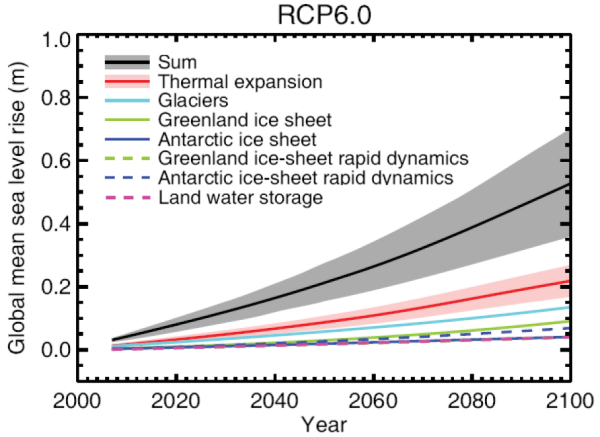
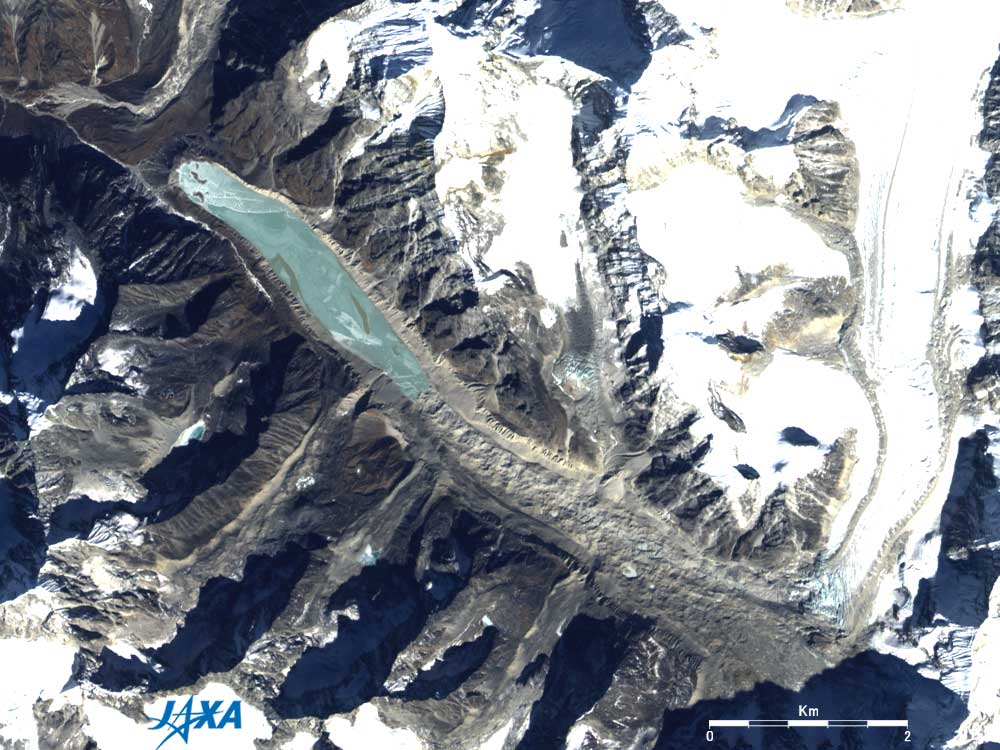
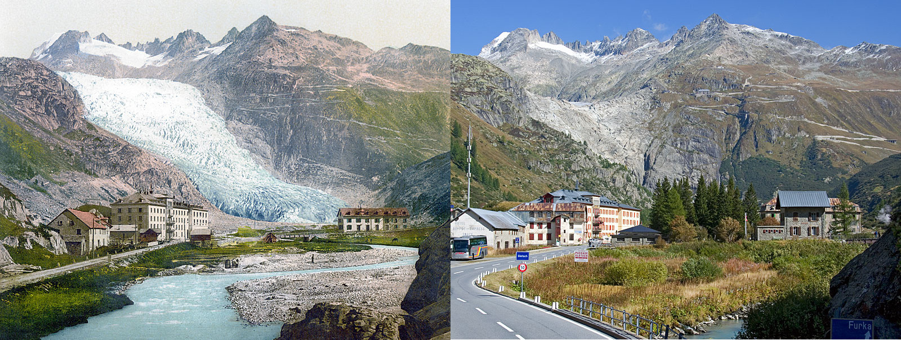
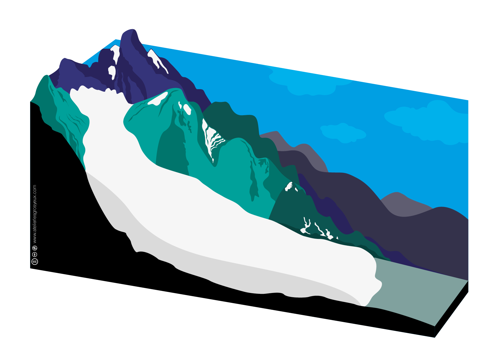
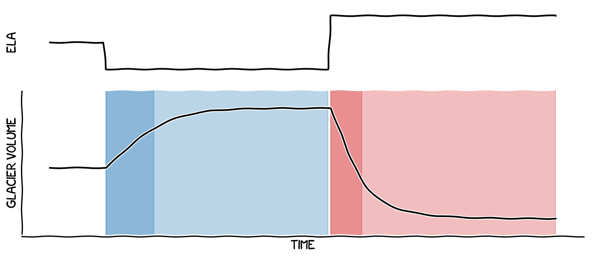
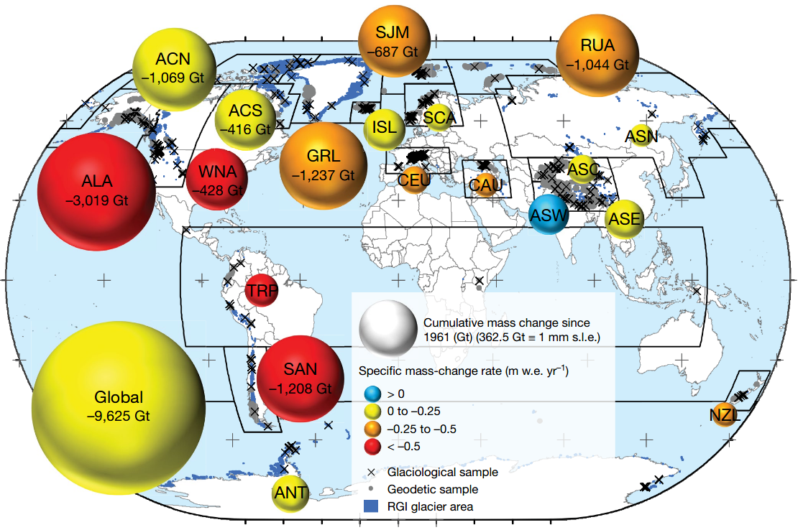
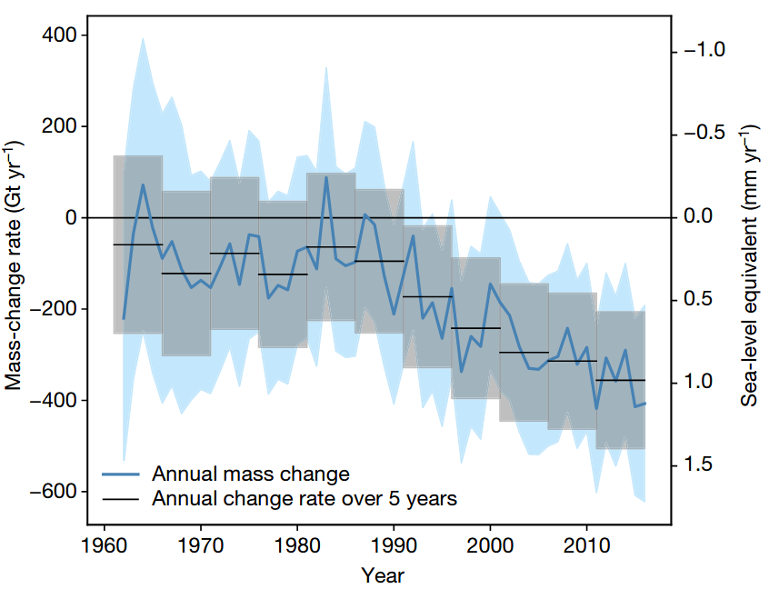
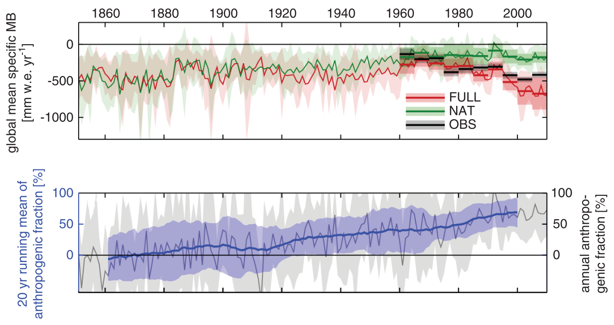
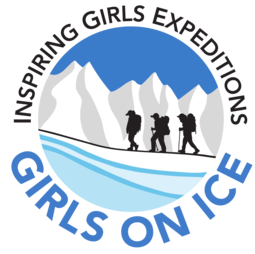

Global glacier change
What are glaciers telling us about climate change?Rotary Club Innsbruck, 26.05.2020
Fabien Maussion
Department of Atmospheric and Cryospheric Sciences (ACINN)
University of Innsbruck
Questions for today
- How do glaciers react to climate change?
- What are the consequences of glacier retreat?
- What is the influence of humans on glacier change?
The glaciers of the world

OGGM-Edu app: World Glaciers Explorer
Take home: glacier explorer
- The number of glaciers is not relevant: their volume is.
- 90% of total glacier volume is found in polar regions
- The Alps contain 0.1% of total glacier ice (0.3 mm s.l.e)
- If all glaciers were to melt, the sea level would rise of about 0.3 m
For comparison: Greenland and Antarctic ice sheets: 6 and 60 m s.l.e!

Source: IPCC AR5.
Glaciers as geohazards

Tsho Rolpa Glacial Lake. Source: JAXA.
Glaciers as icons of climate change

Rhone Glacier, 1900 and 2008. Source: swisseduc.ch.

Click on the image to advance. Source: OGGM-Edu.

Source: OGGM-Edu.
Glaciers as water "resources"
© Nature, Huss & Hock (2018)
© Nature, Huss & Hock (2018)
Past glacier change

© Nature, Zemp et al. (2019)
from 1961 to 2016

© Nature, Zemp et al. (2019)

© Science, Marzeion et al. (2014)
Future glacier change
© Nature, Marzeion et al. (2018)
© Nature, Marzeion et al. (2018)
Take home: glacier change
- Glaciers are melting worldwide (currently about 1 mm s.l.e per year)
- Human influence increases markedly the last decades
- Glaciers are not water "resources", they are reservoirs: their contribution to streamflow depends on region and time
- Even if we stop emissions now, 36% of glacier ice will continue to melt
- Choices we make now will affect future glacier change
(much less so for our future choices)
and wilderness exploration

Interested in supporting Girls on Ice Austria?
Please talk to me after the presentation or contact austria@girlsonice.org